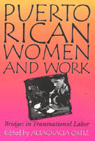

A comprehensive collection of interdisciplinary essays that traces the historical connections between women, work, and the different stages of capitalism in Puerto Rico
A comprehensive collection of interdisciplinary essays that traces the historical connections between women, work, and the different stages of capitalism in Puerto Rico


 A comprehensive collection of interdisciplinary essays that traces the historical connections between women, work, and the different stages of capitalism in Puerto Rico
A comprehensive collection of interdisciplinary essays that traces the historical connections between women, work, and the different stages of capitalism in Puerto Rico

|  |
Puerto Rican Women and WorkBridges in Transnational Laboredited by Altagracia Ortizpaper EAN: 978-1-56639-451-2 (ISBN: 1-56639-451-1) |
Puerto Rican Women and Work: Bridges in Transnational Labor is the only comprehensive study of the role of Puerto Rican women workers in the evolution of a transnational labor force in the twentieth century.
This book examines Puerto Rican women workers, both in Puerto Rico and on the U.S. mainland. It contains a range of information--historical, ethnographic, and statistical. The contributors provide insights into the effects of migration and unionization on women's work, taking into account U.S. colonialism and globalization of capitalism throughout the century as well as the impact of Operation Bootstrap. The essays are arranged in chronological order to reveal the evolutionary nature of women's work and the fluctuations in migration, technology, and the economy. This one-of-a-kind collection will be a valuable resource for those interested in women's studies, ethnic studies, and Puerto Rican and Latino studies, as well as labor studies.
Excerpt available at www.temple.edu/tempress
"The essays are of consistently high quality and originality.... provides a much needed perspective on gender, work, and Puerto Rican women, while contributing more generally to the study of gender and work in both the United States and Latin America."
—Gender and Society
Preface
Introduction – Altagracia Ortiz
1. Needlewomen under the New Deal in Puerto Rico, 1920-1945 – Eileen Boris
2. "En la aguja y el pedal eché la hiel": Puerto Rican Women in the Garment Industry of New York City, 1920-1980 – Altagracia Ortiz
3. Toward Bilingual Education: Puerto Rican Women Teachers in New York City Schools, 1947-1967 – Virginia Sánchez Korrol
4. The Impact of Job Losses on Puerto Rican Women in the Middle Atlantic Region, 1970-1980 – Alice Colón-Warren
5. Our Two Full-Time Jobs: Women Garment Workers Balance Factory and Domestic Demands in Puerto Rico – Carmen A. Pérez-Herranz
6. Gender and Politics: Grassroots Leadership among Puerto Rican Women in a Health Struggle – Marya Muñoz-Vázquez
7. Negotiating Gender, Work, and Welfare: Familia as Productive Labor among Puerto Rican Women in New York City – Rosa M. Torruellas, Rina Benmayor, and Ana Juarbe
8. New Tappings on the Keys: Changes in Work and Gender Roles for Women Clerical Workers in Puerto Rico – Geraldine J. Casey
About the Contributors
Index
Altagracia Ortiz is Professor of History and Puerto Rican Studies at John Jay College, the City University of New York. She has written numerous articles on Puerto Rican women and work and is author of Eighteenth-Century Reforms in the Caribbean.
Contributors: Virginia Sánchez Korrol, Alice Colón-Warren, Carmen A. Pérez-Herranz, Marya Muñoz-Vázquez, Rosa M. Torruellas, Rina Benmayor, Ana Juarbe, Geraldine J. Casey.
Labor Studies and Work
Latin American/Caribbean Studies
Women's Studies
Puerto Rican Studies, edited by Luz del Alba Acevedo, Juan Flores, and Emilio Pantojas-García.
The objective of Puerto Rican Studies, edited by Luz del Alba Acevedo, Juan Flores, and Emilio Pantojas-García, is to bring to publication work on the Puerto Rican experience that is of interest to a wide range of audiences beyond the fields of Puerto Rican and ethnic studies, as well as to provide new insights into other interdisciplinary fields such as cultural studies, women's studies, and urban studies. The series provides a forum for young, creative and daring scholars venturing into nontraditional ways of dealing with issues in Puerto Rican studies. The editors are concerned with producing work that will appeal to the wider North American and English-speaking audiences reaching scholars, writers, activists, feminists, and intellectually curious people throughout the hemisphere and Europe.
© 2015 Temple University. All Rights Reserved. This page: http://www.temple.edu/tempress/titles/1150_reg.html.